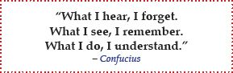

In essence, this learning theory suggests that new information must be meaningfully integrated into existing cognitive structures in order to be truly remembered. That’s exactly what you do with visual maps and why visual mapping was developed. When you learn a new concept, you add it to the appropriate place in the visual map, and in order to do that, you have to analyze the patterns and structures of your topic. This promotes better memorization and recall as well as the ability to apply knowledge in new situations. Experiments have shown that subjects using visual mapping outperform non-visual mappers in longer-term memory retention tests.9

For an even more elaborate and detailed discussion on learning, visit
www.stopstudying.info.